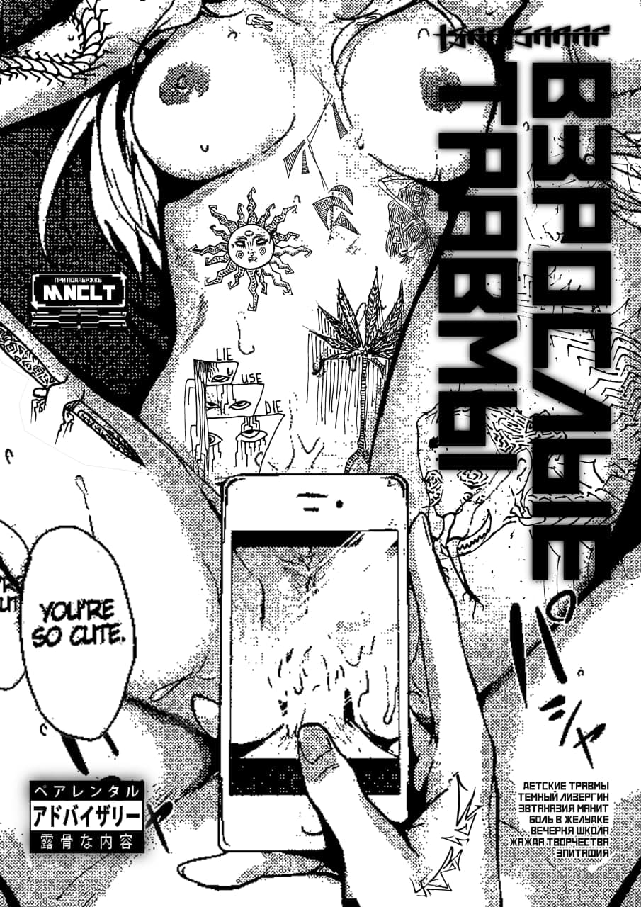

Проект посвящен теме восприятия татуировки как метода создания уникальной связи между людьми. Сборник графических работ созданных в период пандемии 2020-2021 художниками из Киева. Работы объеденяет темная психоделическая эстетика и применение личного опыта для создания редкостных образов
В данной демо-версии представлены работы для внутренней демонстрации тематики и атмосферы конечного продукта вовлеченным людям. Каждый из листов может быть отредактирован/изменен/дополнен/удален в процессе формирования MVP(минимально жизнеспособный продукт)
Восприятие татуировки как сосуда в котором человек смешивает собственный жизненный опыт и эмоции связанные с ним с аналогичным опытом и эстетикой артиста, создавая таким образом уникальный образ, который будет запечатлен с помощью травмирования кожи(поэтому травма).
Существует мнение что нас формируют детские травмы. нанесение татуировки это часто важное событие в жизни человека, которое так же его формирует, поэтому ко мне пришло название "взрослые травмы"
Каждый татуировка это уникальный кусочек вселенной артиста, который был сформирован в процессе столкновения его мыслей с мыслями человека которому наносят татуировку. таким образом этот человек становится персонажем в его мире, делая этот мир более реальным и обретая навыки этого персонажа. при таком методе восприятия татуировка обретает совсем другое значение, она становится травмой
Показать способ восприятия татуировки который я открыл, найти артистов которым близок такой подход и сформировать сообщество авторов создающих редкие сущности используя творческий подход и личный опыт, сообщество людей которые ценят отношение превыше коммерческого успеха и спортивного интереса
Формат печатной версии А4 сложенный вдвое референс, обложка 300гр+поверхностная ламинация, страница 180гр, матовая бумага